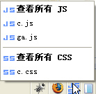
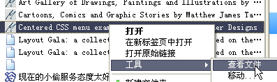
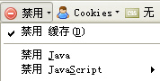
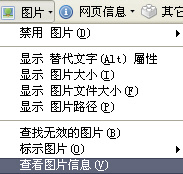
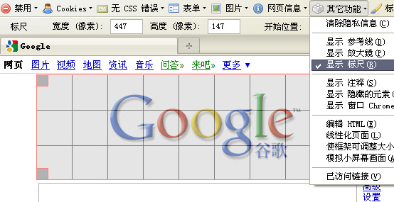
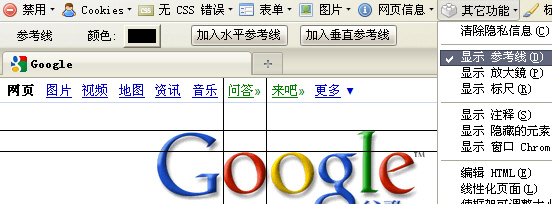

定下CSS框架后，便是写页面的万里长征路。
写静态页面基本是体力活，无非是反复的刷新调试。
不过总是这样写几行，刷一下，的确很累。
麻油四便开始琢磨有没有什么好用的一点儿的工具。
随便在网上逛逛，这还真找到了几个。
最好用的还是几个Firefox插件。
Firefox插件在 https://addons.mozilla.org/zh-CN/ 上搜索名字就可以找到安装链接。
Firebug，可谓是CSS调试的神器。
图:查看元素
JSView ，可以方便的浏览Js和Css文件。

图:查看Js/Css文件
ScrapBook，保存网页，可以完美的把当前页面显示保存为HTML文件。
常常把用它抓页面为静态HTML，然后调试样式。

图:ScrapBook
在ScrapBook的侧栏可以看见抓取到的文件。

图:ScrapBook抓取到的文件
Web Developer，有些非常实用的功能。
1.有时浏览器会缓存CSS/JS，让开发调试很不方便，在此禁用缓存就可以了。当然用Ctrl+F5也可以强制刷新。
另外，禁用Javascript也是很好用的功能。

图:禁用缓存
2.浏览别人网站的时候，发现不错CSS背景图，想收藏却找不到地址，可以试试“查看图片信息”。

图:查看图片信息
3.现在的屏幕分辨率尺寸千差万别，用“调整浏览器大小”可以方便观察在不同分辨率下的页面效果。

图:调整浏览器大小
4.标尺和参考线可用来测量间距，看图标和文字是否对齐。

图:显示标尺

图:显示参考线
现在麻油四基本上都在Firefox下开发调试页面，然后到IE下看看效果。
但IE有几个版本，用的人还都挺多。怎么看不同版本的效果呢？
麻油四寻寻觅觅，找到了IE Tester ，它同时拥有IE6，IE7和IE8的内核，这样就浏览效果就方便了。
图:IE Tester
时光流水，岁月如梭，一晃一个星期过去了 ... ...